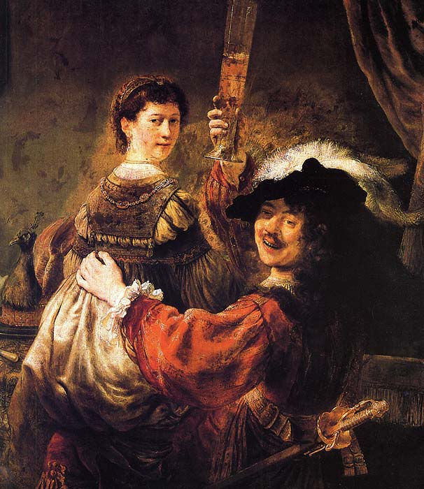

Находите места интереса на картине.
Осталось найти
Снятие с креста
Лицо девы Марии так же освещенно отлично от стоящих к ней поблизости людей. К слову, Рембранд на картине не показывает театральные эмоции, которые так часто встречаются в барокко. Нет, мастер портретов пишет совсем обычные лица людей без наигранности.
Самое освещенное место на картине - это Христос. С помощью лампы, которую держит мальчик, тело Христа отражает свет подобно зеркалу, фактически само становясь источником света.
Данную композицию можно вписать в треугольник - священный символ, триединство Бога.
Далее мы видим, что на картине есть другое пятно света. Это плащеница в которую будет укутано тело
Свет затухает к правому нижнему углу, пока не переходит в абсолютную темноту и именно в этой темноте находится фигура, которая устанавливает единственный зрительный контакт с тем, кто смотрит на картину. Дьявол, скрывающийся в кустах чертополоха.
Подробный разбор Картины
Полотно создано в 1634 году
Рембрандт никогда не выражает прямого протеста. Но, созданный им идеал человека, совершенно противоречит действительности того времени.
В его картинах сквозят настоящие страсти. Театральный драматизм чудесным образом сменяется теми событиями, которые на самом деле происходят в жизни.
Именно это мы и видим в легендарной картине художника.
На полотне изображена ночь. Царит гнетущая тишина. Толпа людей окружает Христа, который распят на кресте. Они все пришли сюда,
чтобы проводить в последний путь своего учителя. Люди очень бережно снимают тело Христа.
Мы видим мужчину, который залез на приставную лестницу и вытаскивает гвозди. Другие люди при этом аккуратно придерживают тело. В этом время женщины заняты приготовлением ложа.
Все действия совершаются очень медленно. Царит почтительная скорбная тишина. Каждый человек переживает, но по-разному.
Некоторые лица выражают отчаяние, другие – скорбь, а третьи – ужас. Но все присутствующие чутко ощущают, насколько значимо то событие, которое совершается. Старик, принимающий тело, бесконечно скорбит. Мария совершенно изнемогла. Стоять ей больше не под силу,
и она падает без чувств прямо на руки окружающих ее людей. Поражает бледность ее лица и безжизненно повисшие кисти.
Картина привлекает зрителей правдой жизни и невероятной проникновенностью. Об увлечениях барокко напоминают только немного преувеличенные жесты и движения. В остальном картина максимально реалистична.
Описание картины Рембрандта Харменса ван Рейна «Снятие с креста»

Автопортрет с женойАвтопортрет в старости
Немного биографии
Рембрандт Харменс ван Рейн родился в голландском городе Лейден в 1606 году 15 июля. Отец Рембрандта был зажиточным мельником, мать – хорошо пекла, была дочерью пекаря. Фамилия «ван Рейн» означает дословно «с Рейна», то есть с реки Рейн, где у прадедов Рембрандта стояли мельницы. Из 10 детей в семье Рембрандт был самым младшим. Другие дети пошли по стопам родителей, а Рембрандт избрал другой путь – художественный, и получил образование в Латинской школе.
В возрасте 13 лет Рембрандт начал учиться рисовать, а также поступил в городской университет. Возраст тогда никого не смущал, главное в то время были знания на уровне. Многие ученые предполагают, что Рембрандт поступил в университет не для того, чтобы учиться, а чтобы получить отсрочку от армии.
В 1634 году Рембранд женился на Саскии. К моменту женитьбы у каждого было хорошее состояние (у Рембрандта за счет рисования картин, а Саскии родители оставили внушительное наследство). Так что это не был брак по расчету. Они действительно горячо и страстно любили друг друга.
В 1635 – 1640 –х гг. жена родила Рембрандту троих детей, но все они умирали новорожденными. В 1641 году Саския родила сына, которого назвали Титус. Ребенок выжил, но, к сожалению, умерла сама мать в возрасте 29 лет.
Дела Рембрандта шли плохо. Не хватало денег, количество заказов уменьшилось. Поэтому часть своей коллекции художник продал, но и это его не спасло. Он был на грани попадания в тюрьму, но суд был в его пользу, поэтому ему разрешили распродать все имущество и отдать долги. Он даже какое-то время еще жил в доме, который ему уже не принадлежал.
Тем временем Титус и его мать организовали фирму, которая занималась торговлей предметами искусства, чтобы хоть как-то помочь Рембрандту. По правде говоря, до конца своей жизни художник так и не расплатился со многими, но это не испортило Рембрандту репутацию, он оставался в глазах людей достойным человеком.
Смерть Рембрандта была очень печальной. В 1663 году умерла любимая художника – Хендрикье. Спустя некоторое время Рембрандт похоронил своего сына Титуса и его невесту. В 1669 году, 4 октября он сам покинул этот мир, но навсегда оставил след в сердцах людей, любящих его.